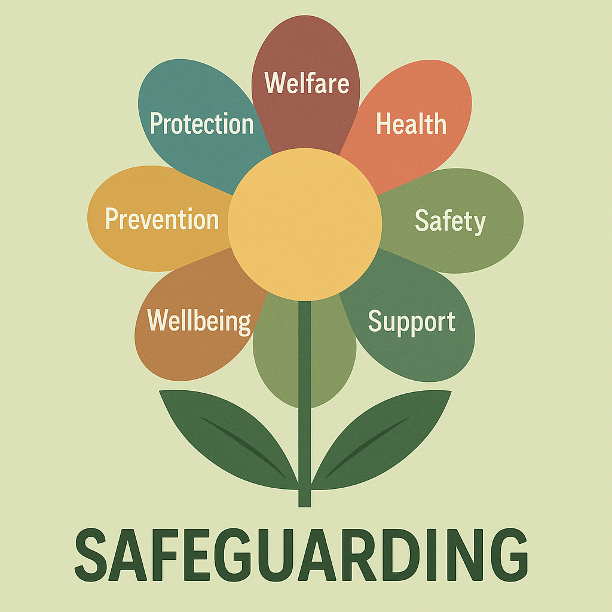
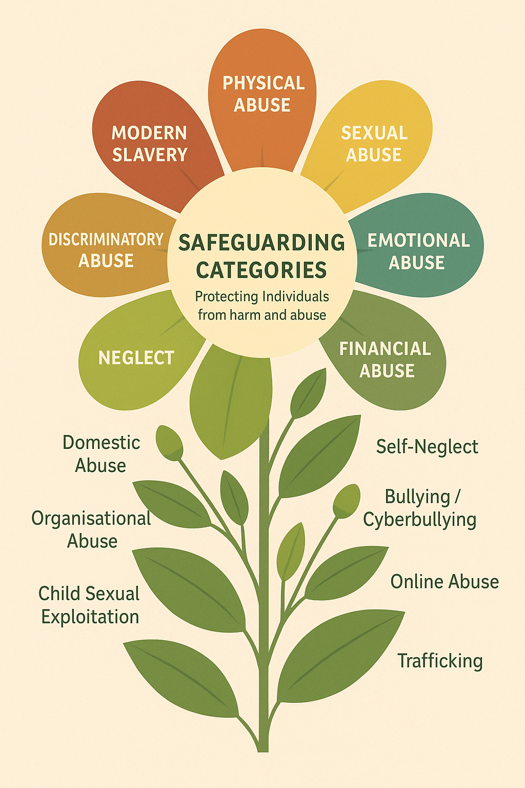

Protecting children and young people with clarity, care and professional responsibility.
Safeguarding is central to Meadow Pathways. It means protecting children and young people from harm, promoting their welfare, and ensuring they grow up in safe, supportive environments. This includes preventing abuse, recognising signs of concern early, responding promptly and appropriately, and working together with families and statutory agencies to keep children safe.
Every child has the right to feel safe and to be protected from neglect, abuse and exploitation. Safeguarding helps children thrive, supports families, reduces long-term harm, and builds trusting relationships between professionals and communities.
If you are concerned that a child is being harmed or is at risk, contact local statutory services immediately. For concerns about Meadow Pathways practice or staff conduct, please contact senior staff directly using the contact details below.
Michelle DSL — 07932 243358 — Michelle.Pascoe@meadowpathwayscornwall.com
Zoe DDSL — 07775 733587 — Zoe.Waitz@meadowpathwayscornwall.com
General — meadowpathwayscornwall@outlook.com